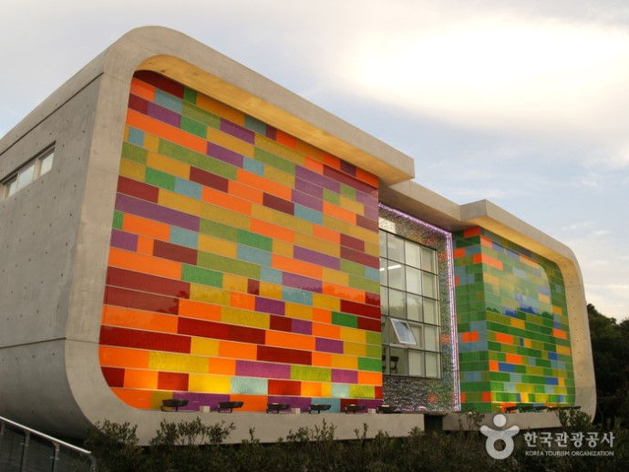

제주 오설록 근처 관광지
제주 오설록의 주변을 살펴보세요.
- 1
- 2
- 3
- 4
- 5
- 6
- 7
- 8
-
1저지예술인마을

-
제주특별자치도 제주시 한경면 저지리에 있는 문화 예술인 마을.
저지예술인마을은 문화예술관, 공동 작업장, 야외 전시장, 전통문화 공간, 개인 작업장 등으로 구성되어 있습니다.
문화예술관은 권위적인 배치 방식을 탈피하여 광장축 중심선상에서 비켜서 배치되었습니다. [네이버 지식백과] 저지예술인마을(한국향토문화전자대전, 한국학중앙연구원)
-
2생각하는 정원
-
생각하는 정원은 1968년부터 전기도 수도도 없는 제주도 오지인 한경면 저지리 일대 돌투성이 황무지 36,000m2를 한 농부인 성범영 혼자만의 힘으로 반세기에 걸쳐 세계에서 가장 아름다운 정원으로 조성한 곳입니다.
제주의 오름을 모티브로 한국의 돌, 물, 나무로 조화를 이룬 창조와 예술, 철학이 융합된 독창적인 정원입니다. [네이버 지식백과] 생각하는 정원-(주)청원 (과학관 여행 길라잡이)
-
생각하는 정원은 1968년부터 전기도 수도도 없는 제주도 오지인 한경면 저지리 일대 돌투성이 황무지 36,000m2를 한 농부인 성범영 혼자만의 힘으로 반세기에 걸쳐 세계에서 가장 아름다운 정원으로 조성한 곳입니다.
-
3환상의 숲 곶자왈 공원
-
제주특별자치도 한경면 저지리에 있는 천연 원시림 곶자왈 공원.
환상 숲 곶자왈 공원 내 체험 길로는 오시록한 길, 생이소리 길, 갈등의 길, 아바타 길, 빌렛못 길이 있습니다.
환상 숲 지질 관측소에서는 겹겹이 쌓인 아아 용암의 층 무늬와 용암돔, 부가 용암구 등을 관찰할 수 있습니다. [네이버 지식백과] 환상 숲 곶자왈 공원(한국향토문화전자대전, 한국학중앙연구원)
-
제주특별자치도 한경면 저지리에 있는 천연 원시림 곶자왈 공원.
-
4유리의 성
- 
-
'제주 유리의 성'은 제주시 한경면 저지리 35,978㎡ 부지에 전시관과 화원, 미로, 조형물 등이 온통 유리로 꾸며져 환상적인 분위기를 연출하는 유리조형물 테마파크입니다.
6개의 테마조형파크에 250여 점의 조형물이 배치된 이 곳에서는 세계 최초로 조성된 유리 미로, 세계 최대 크기의 유리구(球)와 유리 다이아몬드 등과 이탈리아와 체코 등 세계 유명작가의 유리예술품을 감상할 수 있습니다. [네이버 지식백과] 제주 유리의성 (대한민국 구석구석, 한국관광공사)
-
5제주 전쟁역사 평화박물관
-
제주특별자치도 제주시 한경면에 있는 사립 특수박물관.
일제강점기 강제동원 되어 노역한 이성찬의 아들 이영근이 일제강점기의 아픈 역사를 되짚어보기 위한 목적으로 2004년 3월 29일 개관하였습니다.
이곳에는 일본군이 군사기지로 사용했던 지하요새가 남아 있으며, 강제로 징용당한 지역주민들의 노역으로 만들어진 땅굴진지는 일본군의 잔혹상을 잘 보여주고 있습니다. [네이버 지식백과] 제주전쟁역사평화박물관(두산백과)
-
제주특별자치도 제주시 한경면에 있는 사립 특수박물관.
-
6제주항공우주박물관
-
항공과 우주를 테마로 한 제주항공우주박물관이 2014년 4월 24일 개관을 했습니다.
최첨단 기술과 멀티미디어를 활용한 신개념 에듀테인먼트 시설을 표방하는 제주항공우주박물관은 내용이나 규모면에서 아시아 최대로 꼽힙니다. [네이버 지식백과] 제주항공우주박물관 - 신비로운 우주 세계로! (한국관광공사의 아름다운 대한민국 이야기)
-
항공과 우주를 테마로 한 제주항공우주박물관이 2014년 4월 24일 개관을 했습니다.
-
7소인국 테마파크
-
제주특별자치도 서귀포시 안덕면에 있는 미니어처 공원.
전시물은 세계 각국의 유명한 건축물을 선별해 일정한 비율로 축소해 만들었기 때문에 형태는 똑같고, 재질과 크기만 다릅니다.
공원에 들어서면 마치 걸리버가 소인국에 온 것처럼 세계의 유명 건축물들을 한눈에 바라다볼 수 있도록 전시물을 배치하였습니다. [네이버 지식백과] 소인국 테마파크(두산백과)
-
제주특별자치도 서귀포시 안덕면에 있는 미니어처 공원.
-
8카멜리아 힐

-
안덕면 상창리 172,000㎡에 조성된 카멜리아힐은 세계에서 가장 큰 동백꽃을 비롯하여 가장 일찍 피는 동백꽃, 향기를 내는 동백꽃에 이르기까지 전세계 500여 종 6000여 그루의 동백나무가 한데 모여 있는 곳입니다.
카멜리아힐은 동백과 함께 야자수 등 각종 조경수가 함께 어우러진 수목원이기도 합니다. [네이버 지식백과] 카멜리아힐 (대한민국 구석구석, 한국관광공사